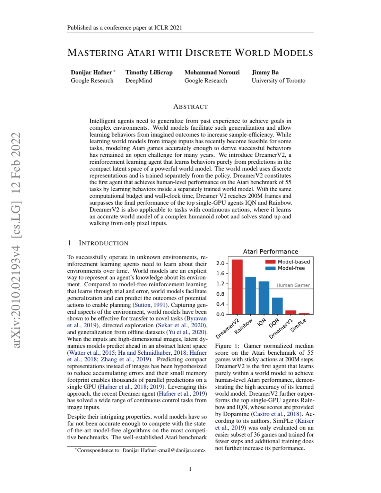
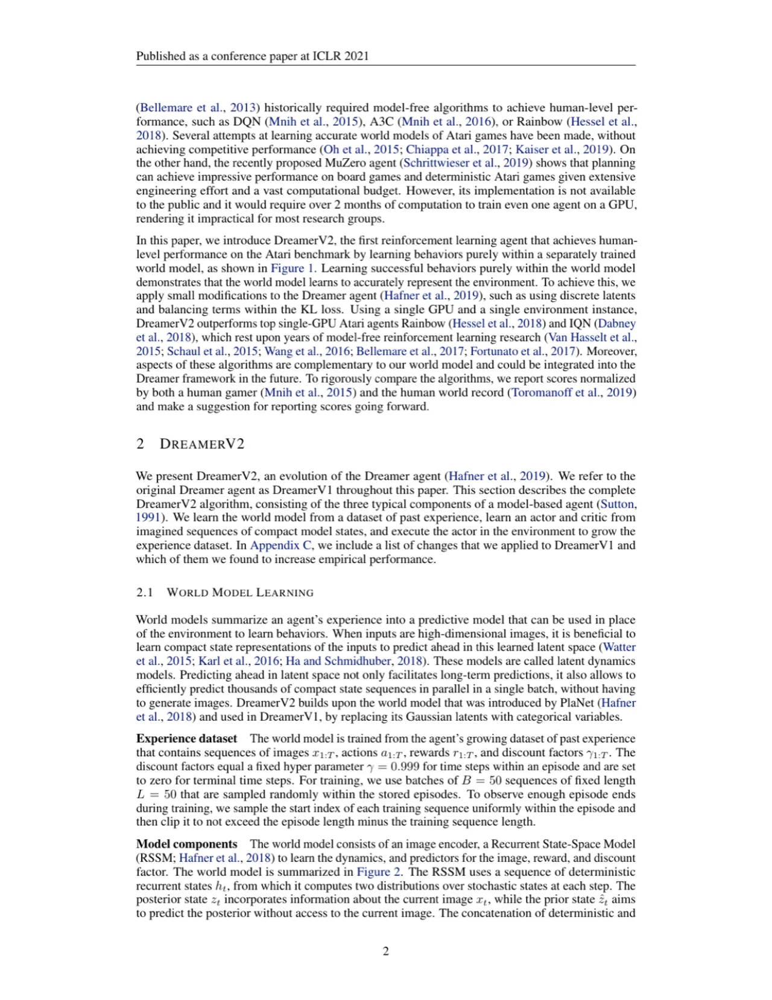
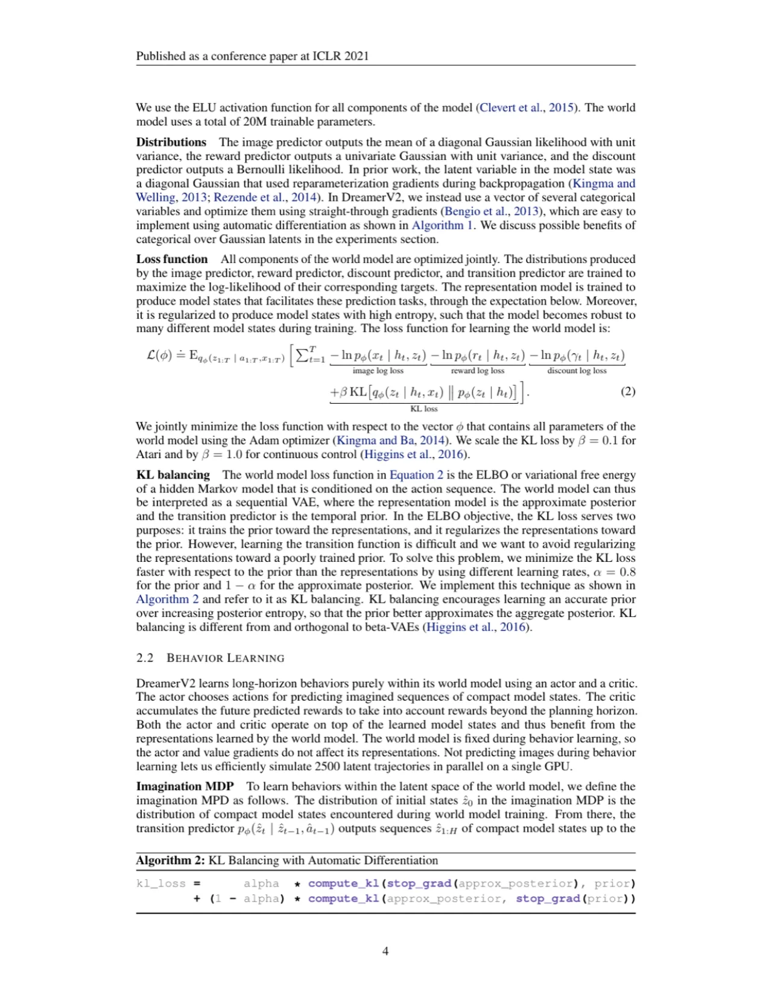
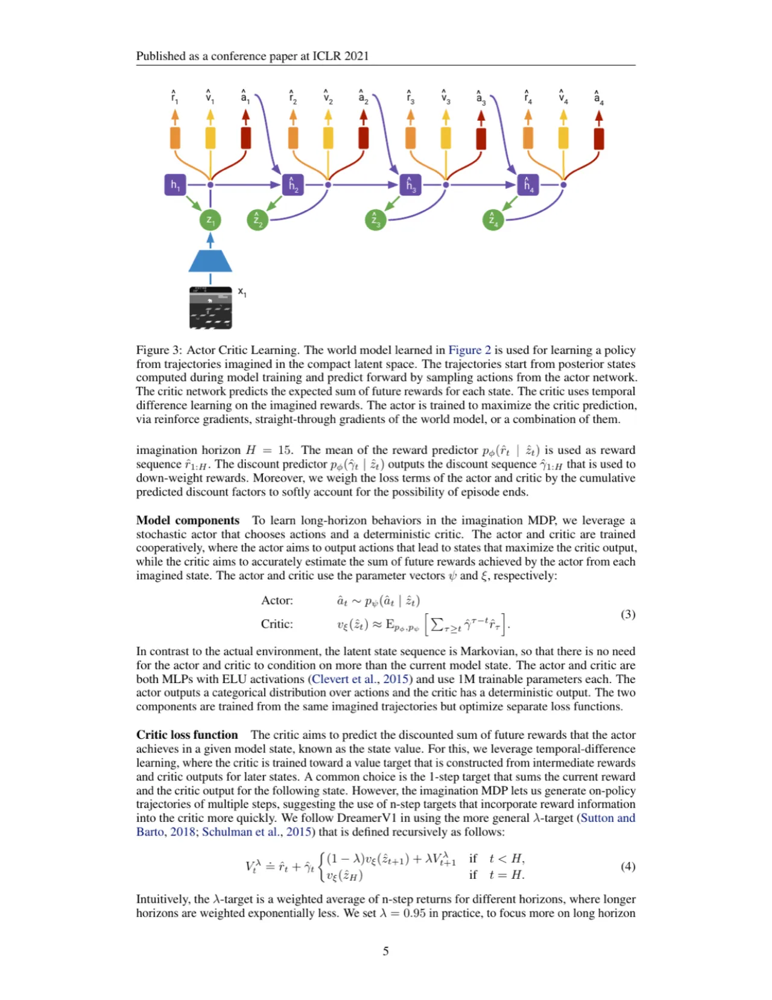
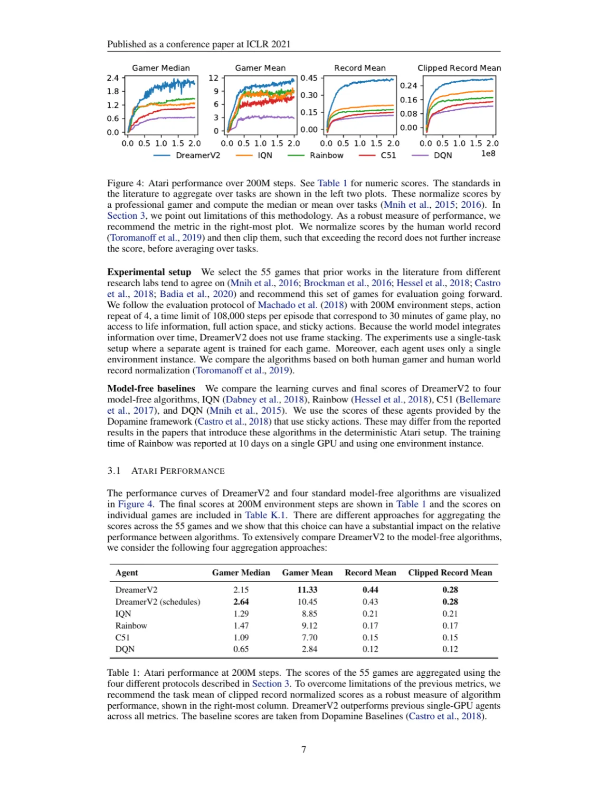

DreamerV2 通过在离散世界模型的紧凑潜空间内纯粹预测来学习行为，首次以单 GPU 在 Atari 55 款游戏基准上实现人类水平性能，同时超越顶级单 GPU model-free 算法 IQN 和 Rainbow。其核心创新在于以 categorical 离散隐变量替代 Gaussian 隐变量，并引入 KL balancing 技术稳定世界模型训练。
世界模型理论上能使智能体从想象中的经历学习行为，从而大幅提升样本效率。然而，多年来在 Atari 这一最具竞争力的基准上，没有任何世界模型方法能与主流 model-free 算法竞争。核心问题是：如何让世界模型足够精确，从而完全在其预测中学习出成功的游戏策略？
"We introduce DreamerV2, the first reinforcement learning agent that achieves human-level performance on the Atari benchmark of 55 tasks by learning behaviors inside a separately trained world model."

DreamerV2 由三部分组成：世界模型（World Model）从过去经验中学习环境的紧凑表征；Actor-Critic 在世界模型的想象轨迹中学习策略；环境交互不断扩充经验数据集。世界模型与策略分开训练，使策略可以充分利用世界模型的表征而不相互干扰。

DreamerV2 用一组 32 个 categorical 变量（每个含 32 个类别）替代 DreamerV1 中的 Gaussian 潜变量。Flatten 后得到长度 1024、仅 32 位为 1 的稀疏二值向量。作者列出四条为何 categorical 变量优于 Gaussian 变量的假设：
世界模型的损失函数包含 KL 项，同时训练先验（transition predictor）和正则化后验（representation model）。标准 KL 的问题是：先验在早期训练不充分，若过度正则化后验会损害表征质量。DreamerV2 引入 KL balancing：以不同学习率优化先验和后验，具体地用混合系数 α = 0.8：
kl_loss = alpha * compute_kl(stop_grad(approx_posterior), prior) + (1 - alpha) * compute_kl(approx_posterior, stop_grad(prior))
这使先验被更快地拉向后验（促进精确先验动力学），而不是让后验熵增大以减小 KL（避免表征退化）。KL balancing 与 beta-VAE 方法正交，可配合使用。

Actor 和 Critic 都是 MLP（各约 1M 参数），在世界模型固定后的想象 MDP 中训练。Critic 用 λ-return 的均方误差损失，Actor 同时最大化 λ-return（通过 Reinforce 梯度和 straight-through 梯度的加权和）并添加熵正则化（Atari 上 η = 10⁻³）。世界模型总参数约 20M。
在 55 款 Atari 游戏上评估（sticky actions，200M steps，action repeat 4，单 V100 GPU，单环境实例），对比 IQN、Rainbow、C51、DQN 四个 model-free 基准（分数来自 Dopamine 框架）。作者同时提出四种聚合方式并推荐 Clipped Record Mean 作为最鲁棒评估指标。

| 算法 | Gamer Median | Gamer Mean | Record Mean | Clipped Record Mean |
|---|---|---|---|---|
| DreamerV2 | 2.15 | 11.33 | 0.44 | 0.28 |
| DreamerV2 (schedules) | 2.64 | 10.45 | 0.43 | 0.28 |
| IQN | 1.29 | 8.85 | 0.21 | 0.21 |
| Rainbow | 1.47 | 9.12 | 0.17 | 0.17 |
| C51 | 1.09 | 7.70 | 0.15 | 0.15 |
| DQN | 0.65 | 2.84 | 0.12 | 0.12 |
Table 1（论文原表）：200M steps 时各算法在 55 款游戏上的汇总分数。DreamerV2 在全部四项指标上超越所有单 GPU 基准。值得注意的是，Rainbow 在 Gamer Median 上优于 IQN（1.47 > 1.29），但在其余三项指标上 IQN 均优于 Rainbow，说明聚合方式的选择对排名有显著影响。

论文通过逐一移除组件进行消融（Table 2）：
作者明确指出："We hypothesize that the reconstruction loss of the world model does not encourage learning a meaningful latent representation because the most important object in the game, the ball, occupies only a single pixel." 即对于关键物体极小的游戏，图像重建损失无法提供足够的学习信号，导致表征质量差。
DreamerV2 在 10 天内完成 200M 步（单 V100），与 Rainbow 相当；但世界模型需要额外维护 20M 参数，并在每步同时更新世界模型和策略，内存与计算开销更高。MuZero 虽更强大，但需 2 个月以上的 GPU 计算（stated：论文明确指出 MuZero "would require over 2 months of computation to train even one agent on a GPU"）。
作者诚实地承认："While we do not know the reason why the categorical variables are beneficial, we state several hypotheses that can be investigated in future work." 该设计在实验上有效，但理论解释尚不充分。
论文展示了 DreamerV2 在 humanoid stand-up 和 walking（连续动作）上的初步结果，但主要评估集中在 Atari（离散动作）。连续控制下使用 dynamics backpropagation（ρ = 0）而非 Reinforce，超参数需分别调整，跨任务泛化能力未经系统验证。